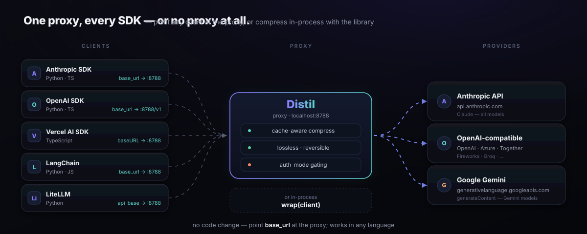

Integrations — one proxy, every SDK
Start distil proxy once and point any SDK's baseURL at it. No library changes, no monkey-patching — compression happens at the network layer.

How it works
The proxy (distil proxy, default http://127.0.0.1:8788) is a local HTTP server. It intercepts the three compressible paths across all major LLM APIs:
/v1/messages— Anthropic Messages API/v1/chat/completions— OpenAI Chat Completions (also used by LiteLLM, LangChain, etc.)/v1/responses— OpenAI Responses API/v1beta/models/{model}:generateContentand:streamGenerateContent— Google Gemini REST API (also the/v1/…host variants)
All other paths and HTTP verbs pass through unchanged. Your API key travels in the request headers exactly as normal — the proxy never logs or stores it.
SDK integration matrix
| SDK / Framework | Language | Setting | Value | Example |
|---|---|---|---|---|
| Anthropic Python SDK | Python | base_url= |
http://127.0.0.1:8788 |
python_anthropic.py |
Anthropic TypeScript SDK (@anthropic-ai/sdk) |
TypeScript | baseURL in new Anthropic({…}) |
http://127.0.0.1:8788 |
js_anthropic.ts |
Claude Agent SDK / claude -p (headless) |
Python / TS / CLI | distil wrap -- <cmd> or ANTHROPIC_BASE_URL |
http://127.0.0.1:8788 |
python_claude_agent_sdk.py |
| OpenAI Python SDK | Python | base_url= |
http://127.0.0.1:8788/v1 |
python_openai.py |
| LiteLLM | Python | api_base= |
http://127.0.0.1:8788 |
python_litellm.py |
| Cursor (agent/chat panel only) | IDE | Settings → Override OpenAI Base URL | http://127.0.0.1:8788/v1 |
below |
| CrewAI | Python | base_url= in LLM({…}) |
http://127.0.0.1:8788/v1 |
below |
| Agno | Python | base_url= in OpenAILike({…}) |
http://127.0.0.1:8788/v1 |
below |
| Strands Agents | Python | client_args={"base_url": …} in OpenAIModel({…}) |
http://127.0.0.1:8788/v1 |
below |
| Microsoft AutoGen | Python | base_url= in OpenAIChatCompletionClient({…}) |
http://127.0.0.1:8788/v1 |
below |
| LlamaIndex | Python | api_base= in OpenAI({…}) |
http://127.0.0.1:8788/v1 |
below |
Vercel AI SDK (@ai-sdk/anthropic) |
TypeScript | baseURL in createAnthropic({…}) |
http://127.0.0.1:8788 |
js_vercel_ai_sdk.ts |
LangChain.js (@langchain/anthropic) |
TypeScript | anthropicApiUrl in ChatAnthropic({…}) |
http://127.0.0.1:8788 |
js_langchain.ts |
Google Gemini REST (google-generativeai) |
Python / curl | api_endpoint in client_options |
http://127.0.0.1:8788 (upstream: https://generativelanguage.googleapis.com) |
python_gemini.py |
Agents distil wrap routes for you
No configuration and no code change: distil wrap -- <agent> starts a proxy, points the agent at it, and restores everything on exit. Most read an environment variable; a few have no such contract and route through a config file wrap manages for that one session. This table and the next are generated from distil/targets.py — distil wrap --list prints the same thing in your terminal.
| Agent | Command | Mechanism | Routing knob | Wire shape |
|---|---|---|---|---|
| aider | distil wrap -- aider | environment variable | OPENAI_API_BASE | OpenAI Chat Completions |
| Claude Code | distil wrap -- claude | environment variable | ANTHROPIC_BASE_URL | Anthropic Messages |
| Codex CLI | distil wrap -- codex | environment variable | OPENAI_BASE_URL | OpenAI Responses |
| Gemini CLI | distil wrap -- gemini | environment variable | GOOGLE_GEMINI_BASE_URL | Gemini generateContent |
| GitHub Copilot CLI | distil wrap -- copilot | environment variable | COPILOT_PROVIDER_BASE_URL | Anthropic Messages |
| goose | distil wrap -- goose | environment variable | OPENAI_HOST | OpenAI Chat Completions |
| Grok CLI | distil wrap -- grok | environment variable | GROK_MODELS_BASE_URL | OpenAI Chat Completions |
| Kilo Code CLI | distil wrap -- kilo | environment variable | KILO_CONFIG_CONTENT | Anthropic Messages or OpenAI Chat Completions |
| Kimi CLI | distil wrap -- kimi | environment variable | KIMI_BASE_URL | OpenAI Chat Completions |
| Mistral Vibe | distil wrap -- vibe | environment variable | VIBE_PROVIDERS | OpenAI Chat Completions |
| OpenCode | distil wrap -- opencode | environment variable | OPENAI_BASE_URL | OpenAI Responses |
| OpenHands | distil wrap -- openhands | environment variable | LLM_BASE_URL | OpenAI Chat Completions |
| Qwen Code | distil wrap -- qwen | environment variable | OPENAI_BASE_URL | OpenAI Chat Completions |
| Cline | distil wrap -- cline | config file | providers.json → providers.<id>.settings.baseUrl | Anthropic Messages or OpenAI Chat Completions |
| Continue | distil wrap -- cn | config file | config.yaml → models[].apiBase (via --config) | Anthropic Messages or OpenAI Chat Completions |
| Crush | distil wrap -- crush | config file | crush.json → providers.<id>.base_url | Anthropic Messages or OpenAI Chat Completions |
| Factory Droid | distil wrap -- droid | config file | settings.local.json → customModels[].baseUrl | OpenAI Chat Completions |
| Oh My Pi | distil wrap -- omp | config file | models.yml → baseUrl | Anthropic Messages or OpenAI Chat Completions |
Agents it cannot reach — and what was checked
Each of these was read against its own primary documentation on the date shown. Where a base-URL setting exists, point it at the URL distil proxy prints (http://127.0.0.1:8788/v1) and verify with distil doctor; where it says — there is no such setting to point. Full reasoning: IDE-AGENTS.md.
| Agent | Its own base-URL setting | Why wrap cannot | Verified |
|---|---|---|---|
| Amp | — (HTTP_PROXY/HTTPS_PROXY only) | re-checked: the CLI settings reference still has no base-URL key; amp.url belongs to the VS Code extension, not the CLI | verified 2026-09-16 |
| Augment (auggie) | — | AUGMENT_SESSION_AUTH carries the session token; no base-URL variable or config key is documented | verified 2026-09-16 |
| Continue (VS Code extension) | ~/.continue/config.yaml → models[].apiBase | apiBase 'can be used to override the default API base', but the extension is started by the editor — no argv to wrap, and the file is editor-wide rather than per-session. The Continue CLI is a different tool and `distil wrap -- cn` does reach it | verified 2026-09-16 |
| Cursor CLI | — (HTTP_PROXY/HTTPS_PROXY only) | cli-config.json publishes no base-URL field; the only network knob is a whole-process HTTP proxy, not a per-request base URL. Its binary is `agent`, a name too generic for distil to claim | verified 2026-09-16 |
| Google Antigravity | — | models are plan-selected from a fixed list; no BYOK and no endpoint override is documented | verified 2026-09-16 |
| JetBrains Junie | model profile → baseUrl | docs render client-side and return nothing over a plain fetch; the config shape could not be verified | verified 2026-09-16 |
| OpenClaw | ~/.openclaw/openclaw.json → models.providers.<id>.baseUrl | the knob is verified, but OpenClaw's own README puts the model connection in a Gateway the CLI merely 'connects to' — one local control plane shared with Discord/WhatsApp/Slack channels and, on a team install, other people. A session-scoped patch would reconfigure a daemon serving them, and restore it mid-flight when one terminal exits | verified 2026-09-16 |
| Roo Code | API Provider → "OpenAI Compatible" → Base URL | a VS Code extension with no CLI, whose configuration profiles live in VS Code's own Secret Storage ('stored securely in VSCode's Secret Storage and never exposed in plain text') — there is no config file to patch | verified 2026-09-16 |
| Snowflake Cortex Code | — | no published base-URL override | verified 2026-09-16 |
| Sourcegraph Cody | site config → modelConfiguration.providerOverrides (server-side) | the override is an admin setting on the Sourcegraph instance, not on the client — a distil gateway in front of that instance is the fit, not wrap | verified 2026-09-16 |
| Tabnine | — | clients point at a Tabnine server, not at an LLM endpoint; the CLI docs publish no model base-URL override | verified 2026-09-16 |
| Trae | Settings → Models → custom model | custom models exist, but every docs path returns the same client-rendered shell over a plain fetch — the config shape could not be verified against an authoritative source | verified 2026-09-16 |
| VS Code Copilot Chat (extension) | chatLanguageModels.json → vendor customendpoint → models[].url | BYOK 'Custom Endpoint' takes a full per-model URL (Chat Completions, Responses or Anthropic Messages), so point it at a running distil proxy — `distil setup --vscode` prints the entry. The extension is editor-launched, so there is nothing to wrap; chat only (inline completions, embeddings and semantic search stay on GitHub), and a Business/Enterprise admin can disable BYOK | verified 2026-09-25 |
| Warp | Settings → custom inference endpoint (public HTTPS URL only) | Warp DOES publish an endpoint override now (the older 'no override at all' note was stale) — but the agent harness runs on Warp's servers and the docs reject localhost and private addresses, so a local distil proxy cannot be the target | verified 2026-09-16 |
| Windsurf | Settings → Cascade → custom endpoint | BYOK accepts a provider API KEY only (Claude 4 family), with no endpoint field in the documented flow | verified 2026-09-16 |
| ZCode (z.ai) | Settings → Providers → Base URL (Anthropic or OpenAI protocol) | z.ai's own page calls it an Agentic Development Environment, a desktop app with no CLI — the Base URL field is verified and does take a local proxy, but there is no process for wrap to launch or scope a config change to | verified 2026-09-16 |
| Zed agent | settings.json → language_models.anthropic_compatible.<name>.api_url (or openai_compatible) | no single key redirects it: the BUILT-IN anthropic provider documents only available_models, never an api_url, so routing means ADDING an anthropic_compatible provider the user must then pick by hand in the model dropdown — and Zed's own Agent Settings page writes settings.json while it runs, so a session-scoped patch would be racing the editor for the file | verified 2026-09-16 |
Snippets
Anthropic Python SDK
import anthropic client = anthropic.Anthropic( api_key="sk-ant-…", base_url="http://127.0.0.1:8788", ) response = client.messages.create( model="claude-opus-4-5", max_tokens=1024, messages=[{"role": "user", "content": "Hello!"}], )
OpenAI Python SDK
import openai client = openai.OpenAI( api_key="sk-…", base_url="http://127.0.0.1:8788/v1", ) response = client.chat.completions.create( model="gpt-4o", messages=[{"role": "user", "content": "Hello!"}], )
LiteLLM
import litellm response = litellm.completion( model="claude-opus-4-5", api_base="http://127.0.0.1:8788", api_key="sk-ant-…", messages=[{"role": "user", "content": "Hello!"}], )
Running the standalone LiteLLM Proxy instead?
Same mechanism, one YAML field: point each model's api_base at distil proxy, and every request routed through the LiteLLM Proxy is compressed transparently.
# Terminal 1 — distil sits in front of the real upstream distil proxy --port 8788 --upstream https://api.anthropic.com # config.yaml — Terminal 2 model_list: - model_name: claude-opus-4-5 litellm_params: model: anthropic/claude-opus-4-5 api_base: http://127.0.0.1:8788 api_key: os.environ/ANTHROPIC_API_KEY # Terminal 2 — start the LiteLLM Proxy against that config litellm --config config.yaml
Cursor
Settings → enable Override OpenAI Base URL, set it to the proxy, and add your model. The key field is labelled "OpenAI API Key" but is sent to whatever endpoint you configure.
CrewAI
CrewAI's LLM takes base_url directly. Point it at the proxy and prefix the model with its provider.
$ pip install crewai $ distil proxy --port 8788 --upstream https://api.openai.com & import os from crewai import Agent, LLM llm = LLM( model="openai/gpt-4o", # provider prefix is required base_url="http://127.0.0.1:8788/v1", # ← the only change; end at /v1 api_key=os.environ["OPENAI_API_KEY"], ) agent = Agent(llm=llm, ...)
planning_llm, function_calling_llm and any manager LLM separately — leave those unset and those calls go straight to the provider, bypassing the proxy entirely. You would see partial savings and no error. Set base_url to the /v1 root, not /v1/chat/completions; LiteLLM appends the route itself.
Agno
Agno's OpenAILike is the class it recommends for any OpenAI-compatible endpoint — it takes the same parameters as OpenAIChat and relaxes the OpenAI-only assumptions. Point base_url at the proxy and every model call the agent makes is compressed on the way out.
$ pip install agno openai $ distil proxy --port 8788 --upstream https://api.openai.com & import os from agno.agent import Agent from agno.models.openai.like import OpenAILike agent = Agent( model=OpenAILike( id="gpt-4o", api_key=os.environ["OPENAI_API_KEY"], base_url="http://127.0.0.1:8788/v1", # ← the only change ) ) agent.print_response("...")
Strands Agents
Strands' OpenAIModel forwards client_args straight to the underlying openai client, so base_url goes there. Nothing else in the agent changes.
$ pip install strands-agents $ distil proxy --port 8788 --upstream https://api.openai.com & import os from strands import Agent from strands.models.openai import OpenAIModel model = OpenAIModel( client_args={ "api_key": os.environ["OPENAI_API_KEY"], "base_url": "http://127.0.0.1:8788/v1", # ← the only change }, model_id="gpt-4o", ) agent = Agent(model=model)
Microsoft AutoGen
AutoGen's OpenAIChatCompletionClient takes base_url directly, same as the raw OpenAI client it wraps.
$ pip install "autogen-agentchat" "autogen-ext[openai]" $ distil proxy --port 8788 --upstream https://api.openai.com & import os from autogen_agentchat.agents import AssistantAgent from autogen_ext.models.openai import OpenAIChatCompletionClient client = OpenAIChatCompletionClient( model="gpt-4o", api_key=os.environ["OPENAI_API_KEY"], base_url="http://127.0.0.1:8788/v1", # ← the only change ) agent = AssistantAgent("assistant", model_client=client)
Prefer no sidecar at all? distil.integrations.autogen wraps a ChatCompletionClient or a FunctionTool callable in-process — see AutoGen × Distil for both.
distil-agno, distil-strands, or distil-autogen package. All three are two-line base_url redirects, and so is every other framework that speaks an OpenAI- or Anthropic-shaped API. distil is a proxy, so a framework is supported the moment it lets you set an endpoint — there is nothing to version, nothing to break on the framework's next release, and no per-framework code to maintain. The in-process hooks further down (and AutoGen's own page) exist only for the cases where you want compression without running a proxy at all.
LlamaIndex
LlamaIndex's OpenAI/Anthropic LLM classes take api_base directly, same as the raw client each one wraps.
$ pip install llama-index $ distil proxy --port 8788 --upstream https://api.openai.com & from llama_index.llms.openai import OpenAI llm = OpenAI(model="gpt-5", api_base="http://127.0.0.1:8788/v1") # ← the only change query_engine = index.as_query_engine(llm=llm)
Prefer no sidecar at all? distil.integrations.llamaindex gives you a node postprocessor for retrieved context, an LLM wrapper, and a FunctionTool callable wrapper, all in-process — see LlamaIndex × Distil for all three.
Vercel AI SDK (TypeScript)
import { createAnthropic } from "@ai-sdk/anthropic"; import { generateText } from "ai"; const anthropic = createAnthropic({ baseURL: "http://127.0.0.1:8788", apiKey: process.env.ANTHROPIC_API_KEY, }); const { text } = await generateText({ model: anthropic("claude-opus-4-5"), prompt: "Hello!", });
LangChain.js (TypeScript)
import { ChatAnthropic } from "@langchain/anthropic"; const model = new ChatAnthropic({ model: "claude-opus-4-5", apiKey: process.env.ANTHROPIC_API_KEY, anthropicApiUrl: "http://127.0.0.1:8788", // older versions: clientOptions: { baseURL: "http://127.0.0.1:8788" } }); const response = await model.invoke([ ["human", "Hello!"], ]);
Google Gemini REST
# Start proxy pointing at the Gemini API
distil proxy --port 8788 --upstream https://generativelanguage.googleapis.com
import google.generativeai as genai genai.configure( transport="rest", client_options={"api_endpoint": "http://127.0.0.1:8788"}, ) model = genai.GenerativeModel("gemini-1.5-pro") response = model.generate_content("Hello!")
See examples/python_gemini.py for a full runnable example including tool-use turns. The proxy transparently compresses text parts (Tier-0 lossless) and functionResponse payloads (Tier-1 reversible digest). functionCall, inlineData, fileData, model-authored text, and systemInstruction are always passed through unchanged.
Claude Code plugin
The first-class integration: a session-first savings status line plus
slash commands, shipped as a marketplace-format plugin
(plugins/distil).
Wire it in one step with distil setup (or distil onboard), then
route the agent through compression with distil wrap -- claude.
| Command | What it does |
|---|---|
/distil-onboard | Set up distil + a guided, tailored tour |
/distil | Savings report + how to route more traffic through distil |
/distil-stats | Full breakdown — tokens, cost, runs, per-trajectory bars |
/distil-shadow | Live decision-equivalence: did compression preserve the next action? |
/distil-dashboard | HTML savings page — session, lifetime, and decision-equivalence cards |
/distil-doctor | Diagnose the setup — ledger, shadow validation, proxy round-trip, wiring |
/distil-certify | Trajectory-level certificate: bound how many solvable tasks compression may cost |
/distil-badge | Shareable badge of your measured savings |
One pattern in every state: distil · <live> · total ▼<lifetime>.
The live segment aggregates recent activity (last 15 min, all terminals), so it never
flickers between sessions:
| State | You see | Means |
|---|---|---|
| saving | distil · ▼12.0K · 40% smaller · $0.31 · total ▼27.0M · ⚠de 97.5% (398) | compressing your recent traffic |
| watching | distil · ✓ on · waiting for a large read · total ▼27.0M | on, but no large content yet — savings come from big file/command output |
| idle | distil · ✓ on · total ▼27.0M | set up and on, no recent traffic |
| not routed | distil · off — session not routed · total ▼27.0M | this session goes straight to the provider — start it with distil wrap (or the always-on env) to compress. "on" always means routed, never merely installed. |
▼ = tokens saved · total = lifetime · de = decision-equivalence
(shown only past the reporting floor, 50 A/B + 30 A/A shadow samples — a rate over a handful is
noise; ✓ at 99% and above, ⚠ under 99%, ✗ under 95%). Sharing the line with
git/cwd/model? Set DISTIL_STATUSLINE=minimal for a two-fact segment:
distil ▼75.0K · 27.0M total.
MCP server
A zero-dependency Model Context Protocol server (stdlib only — no SDK) exposes distil's reversible compression to any MCP client (Claude Desktop, IDEs, agents) over stdio:
claude mcp add distil -- distil mcp # Claude Code — one line, done
Every other client takes the same stdio config — Claude Desktop
(~/Library/Application Support/Claude/claude_desktop_config.json), Cursor
(.cursor/mcp.json), VS Code (.vscode/mcp.json):
{
"mcpServers": {
"distil": { "command": "distil", "args": ["mcp"] }
}
}
No distil install? Run it from PyPI on demand — "command": "uvx", "args":
["--from", "distil-llm", "distil", "mcp"]. Restart the client after editing. To check the
server without a client at all:
echo '{"jsonrpc":"2.0","id":1,"method":"tools/list"}' | distil mcp
| Tool | What it does | Called when |
|---|---|---|
distil_compress(text) | Compact digest + an 8-hex handle; the
original is stored locally (encrypted, 0600) and never returned until asked |
A tool returned something huge and carrying it verbatim is wasteful |
distil_expand(handle) | The exact original bytes — not a summary | The digest lost a detail the agent now needs: a line, a value, a stack frame |
distil_savings() | Cumulative tokens/dollars from the local ledger | Someone asks what distil has saved |
Each tool carries MCP annotations (readOnlyHint, idempotentHint,
openWorldHint: false), so a client knows distil_expand is a safe,
repeatable, offline read instead of inferring it from prose.
This is the recall path, not the savings path. The MCP server does not compress your
agent's traffic — distil wrap does that transparently, with no tool calls. What the
MCP server adds is the other half: any agent, including one you never wrapped, can call
distil_expand on a handle it sees in context and get the original back. Handles
survive restarts and cross processes, and age out after DISTIL_RESTORE_TTL_DAYS
(default 14).
In-process hooks (LiteLLM · LangChain · LangGraph · AutoGen · LlamaIndex)
Prefer not to run a sidecar? Compress the request in-process — the same reversible compression, no proxy. Every helper lazy-imports (or duck-types) its framework, so distil stays zero-dep.
# LiteLLM — drop-in for litellm.completion from distil.integrations import litellm as distil_litellm resp = distil_litellm.completion(model="claude-opus-4-8", messages=[...], distil_verbatim=True) # optional, Tier-0 only # LangChain — compress a message list before the model call (duck-typed) from distil.integrations.langchain import compress_messages msgs = compress_messages(state["messages"], verbatim=True) # LangGraph — compress graph state right before the model node from distil.integrations.langgraph import pre_model_hook agent = create_react_agent(model, tools, pre_model_hook=pre_model_hook()) # AutoGen — compress a ChatCompletionClient's outgoing messages, or one tool's output from distil.integrations.autogen import DistilModelClient, compressing_tool client = DistilModelClient(OpenAIChatCompletionClient(model="gpt-4o")) tool = FunctionTool(compressing_tool(get_weather), description="...") # LlamaIndex — compress retrieved nodes, an LLM's outgoing calls, or one tool's output from distil.integrations.llamaindex import DistilNodePostprocessor, DistilLLM query_engine = index.as_query_engine( llm=DistilLLM(OpenAI(model="gpt-5")), node_postprocessors=[DistilNodePostprocessor()], )
Tool/function messages and retrieved nodes get the reversible Tier-1 digest; human/system
messages get Tier-0 lossless; the model's own words are never rewritten. compress()
(LiteLLM), compress_messages() (LangChain), pre_model_hook()
(LangGraph), DistilModelClient/compressing_tool() (AutoGen), and
DistilLLM/DistilNodePostprocessor (LlamaIndex) are framework-free and
unit-tested. The LangGraph hook returns only the updated message list, so every other state
field is left intact; DistilModelClient delegates every attribute it doesn't wrap
straight to the real client, and DistilLLM re-types the LLM you pass as a
transparent subclass of its own class, so it still satisfies the isinstance
checks LlamaIndex performs on an llm= argument.
LangChain / LangGraph as a package — langchain-distil
The two hooks above are also published as a standalone package, listed in LangChain’s own
community middleware
integrations. It is a thin wrapper over exactly those hooks — same certified compression path,
nothing re-implemented — and it pulls distil-llm in as a dependency.
$ pip install langchain-distil from langchain_distil import compress_messages, pre_model_hook, as_runnable msgs = compress_messages(msgs) # a message list graph = create_react_agent(model, tools, pre_model_hook=pre_model_hook()) # LangGraph state chain = as_runnable() | llm # or a chain step
as_runnable() imports langchain-core lazily, so importing the package never
requires it. See LangChain × Distil or LangGraph × Distil for the full page.
ASGI middleware — when you host the endpoint
Every hook above sits in a client that calls out to a provider. If instead your own
backend is the thing building the provider request — a FastAPI/Starlette/Litestar app that
forwards to Anthropic/OpenAI/Gemini itself — wrap it once with DistilMiddleware, pure ASGI,
no Starlette import:
from distil.integrations.asgi import DistilMiddleware app = DistilMiddleware(app) # wraps any ASGI 3 app; compresses matching POST bodies
It reuses the exact path detection and reversible compression distil proxy uses, so a handle
minted here expands anywhere. See ASGI Middleware × Distil for the full page.
Observability headers
The proxy adds up to 9 response headers per compressed response. The first two appear on every compressed request; the rest are conditional:
| Header | Meaning | Condition |
|---|---|---|
x-distil-compressed: 1 |
Compression was applied this turn. | Always (on compressed requests) |
x-distil-tokens-saved: <n> |
Estimated input tokens saved (heuristic tokenizer). | Always (on compressed requests) |
x-distil-expanded: 1 |
A digest was resolved via the transparent expand loop. | When --expand fired |
x-distil-cache-prefix-msgs: <n> |
Leading messages left byte-identical vs the previous turn (the prompt-cache-read region) — the verifiable benefit of a prefix-freeze router, content-free. | With --session-delta |
x-distil-cache-refs: <n> |
Total cache-delta references this turn. | With --session-delta |
x-distil-cache-delta: <n> |
Delta-encoded references this turn. | With --session-delta |
x-distil-cache-tokens-saved: <n> |
Tokens saved by cache-delta encoding. | With --session-delta |
x-distil-output-shaping: light|aggressive |
Output shaping was injected at this level. | When --shape-output fired |
x-distil-shadow: sampled |
This request was sampled for shadow-mode decision-equivalence. | When --shadow rate triggered |
The managed gateway (distil gateway) additionally adds x-distil-tenant: <id> for per-tenant accounting.
Node.js / TypeScript
Distil's universal path is the proxy — it's language-agnostic, so JS/TS stacks need no Distil-specific package. Start the proxy (or wrap your agent) and point your SDK's baseURL at it:
# start the proxy (needs Python 3.9+ — see Install)
distil proxy --port 8788 --upstream https://api.anthropic.com
// then in your Node/TS app — no code change beyond baseURL const client = new Anthropic({ baseURL: "http://localhost:8788" });
Or wrap an existing CLI/agent in one shot: distil wrap -- <your-command> starts the proxy and injects ANTHROPIC_BASE_URL automatically.
Homebrew
brew tap dshakes/tap brew install dshakes/tap/distil distil proxy --port 8788
Adapters & Integration
Three paths to production: a one-line Python wrapper that compresses in-process, a standalone HTTP proxy that works with any SDK or framework, or distil wrap — a zero-config launcher that routes any existing command through the proxy automatically.
Path 1 — In-process: wrap(client)
Module: distil/adapters/anthropic.py
The fastest path for Python codebases already using the Anthropic SDK. Wrap your client once at construction time — all downstream messages.create calls are transparently compressed and cache-pinned with no call-site changes.
import anthropic from distil.adapters.anthropic import wrap # Before: plain Anthropic client client = anthropic.Anthropic() # After: one-line drop-in client = wrap(anthropic.Anthropic()) # No other code changes — all calls compressed transparently response = client.messages.create( model="claude-opus-4-5", max_tokens=1024, system="You are a helpful assistant.", messages=[{"role": "user", "content": "Analyse this log output…"}], )
What the wrapper does
On every messages.create(**kwargs) call, the wrapper:
- Compresses the messages array via
compress_messages():- User text blocks: Tier-0 lossless transforms (JSON minify + run collapse).
- Tool result blocks with ≥ 6 lines: Tier-1 reversible digest, original stored in a local
RestoreStore. - Assistant text and
tool_useblocks: passed through unchanged. imageblocks: a duplicate of an already-seen image (certificate-gated, ADR 0003) is elided to a reversible reference; the first occurrence is always left untouched.
- Pins the cache prefix via
place_cache_control(): marks the last stable system block with{"cache_control": {"type": "ephemeral"}}, so the first call pays the cache-write price and every subsequent call pays the ~0.1× cache-read price. - Forwards the modified kwargs to the real
client.messages.create.
The RestoreStore
Digested blocks embed an 8-hex SHA-256 handle in their compressed text. The RestoreStore maps handles to originals locally — it is never sent to the model and costs zero tokens. To recover an original:
from distil.adapters.anthropic import compress_messages compressed, store = compress_messages(messages) # store.handles → frozenset of all active handles original = store.expand("a3f92b1c") # retrieve original by handle
Design properties
- Duck-typed. The wrapper imports nothing from the Anthropic SDK — it works with any object that exposes a
messages.create(**kwargs)method, including mocks in test environments. - Non-mutating. Input message lists are never modified in place; new lists are returned.
- Reversible. Every change is either lossless (Tier-0) or stored in the local RestoreStore (Tier-1). Nothing is permanently lost.
Path 2 — Provider proxy: distil proxy
Module: distil/proxy.py
A lightweight HTTP proxy that sits between your client and the real LLM API. It intercepts POST /v1/messages, POST /v1/chat/completions, POST /v1/responses, and POST /v1beta/models/{model}:generateContent (and :streamGenerateContent) requests, compresses the payload, and forwards the modified request to the upstream. All other paths and methods pass through unchanged.
This approach works with any SDK, framework, or language, with zero application code changes.
$ distil proxy --port 8788 --upstream https://api.anthropic.com
distil proxy listening on http://127.0.0.1:8788
→ upstream: https://api.anthropic.com
Point your client at the proxy
Python
import anthropic client = anthropic.Anthropic( base_url="http://localhost:8788" )
Python / Node
import openai client = openai.OpenAI( base_url="http://localhost:8788/v1", api_key="…" )
Multi-provider
litellm.completion(
api_base="http://localhost:8788",
model="anthropic/claude-…",
messages=[...]
)
Python
from langchain_anthropic import ChatAnthropic llm = ChatAnthropic( base_url="http://localhost:8788" )
Python / curl
$ distil proxy --upstream \ https://generativelanguage.googleapis.com # then in your code — no other changes import google.generativeai as genai genai.configure( transport="rest", client_options={ "api_endpoint": "http://localhost:8788" }, )
Proxy flags
| Flag | Default | Description |
|---|---|---|
--port | 8788 | Port to listen on |
--upstream | https://api.anthropic.com | Real LLM API base URL (no trailing slash) |
--lossless-only | off | Policy mode: Tier-0 verbatim only — no lossy output-shaping, no tool injection (--expand), no Tier-1 digest stubs. Folds directly into verbatim (no separate --verbatim needed). Use for subscription / OAuth sessions. |
--verbatim | off | Skip the Tier-1 digest entirely; Tier-0 only (JSON minify + collapse exact-duplicate runs). The model sees message content essentially verbatim. Use for interactive sessions or where distil_expand is unavailable. Lower savings. |
Response headers
The proxy adds up to 9 response headers to compressed responses (not all appear on every request):
x-distil-compressed: 1— compression was appliedx-distil-tokens-saved: <n>— heuristic estimate of tokens saved (not billing-grade)x-distil-expanded: 1— present when--expandfired and a digest was resolved in the transparent expand loopx-distil-cache-prefix-msgs: <n>— leading messages left byte-identical vs the previous turn, i.e. the prompt-cache-read region (only with--session-delta)x-distil-cache-refs: <n>— total cache-delta references (only with--session-delta)x-distil-cache-delta: <n>— delta-encoded references (only with--session-delta)x-distil-cache-tokens-saved: <n>— tokens saved by cache-delta encoding (only with--session-delta)x-distil-output-shaping: light|aggressive— present when output shaping firedx-distil-shadow: sampled— present when this request was sampled for shadow-mode decision-equivalence
The managed gateway additionally adds x-distil-tenant: <id> for per-tenant accounting.
Threading model
The proxy uses Python's ThreadingHTTPServer — each incoming connection is handled in its own thread, so concurrent requests from multiple clients are supported. It is intentionally simple and easy to audit.
Path 3 — Transparent: distil wrap
Module: distil/proxy.py · wrap_run()
When you don't own the agent's code — it's a CLI, a third-party tool, or any process that reads ANTHROPIC_BASE_URL — distil wrap gives you Path 2's compression with none of the setup. It spawns the proxy on an ephemeral port, injects the env var into the child, runs your command, and tears everything down on exit (flushing genuine savings to your ledger).
$ distil wrap -- claude -p "summarize this repo"
distil wrap → proxy http://127.0.0.1:54xxx (upstream https://api.anthropic.com)
→ ANTHROPIC_BASE_URL=http://127.0.0.1:54xxx
→ recording genuine savings → distil leaderboard
Everything after -- runs verbatim and its exit code is propagated. Use --env-var to point a different variable (e.g. an OpenAI-compatible client) at the proxy. See the CLI reference for all flags.
Google Gemini adapter
Module: distil/adapters/gemini.py
The Gemini adapter compresses Google's generateContent REST request shape. It is wired into the proxy, the async proxy, and the gateway — no extra configuration beyond pointing the proxy at the Gemini API.
$ distil proxy --upstream https://generativelanguage.googleapis.com
distil proxy listening on http://127.0.0.1:8788
→ upstream: https://generativelanguage.googleapis.com
See examples/python_gemini.py for a runnable end-to-end example.
Request shape handled
{
"contents": [
{
"role": "user" | "model",
"parts": [
{ "text": "…" },
{ "functionCall": {"name": "…", "args": {…}} },
{ "functionResponse": {"name": "…", "response": {…}} }
]
}
]
}
What is compressed
| Part type | What happens | Reversible? |
|---|---|---|
text parts (non-model role) |
Tier-0 lossless: JSON minify + collapse exact-duplicate runs | Provably lossless — no side state |
functionResponse parts |
Large string values inside response get the Tier-1 reversible digest; object structure is preserved so the request stays valid |
Reversible via local RestoreStore (never sent to model, zero tokens) |
functionCall parts |
Passed through untouched | — |
text parts (model role) |
Passed through untouched — the model's own words are never rewritten | — |
inlineData, fileData (non-model role) |
A duplicate of an already-seen image is elided to a reversible reference (certificate-gated, ADR 0003, same rule as the Anthropic/OpenAI adapters); first occurrence untouched. A fileData.fileUri is only treated as a duplicate when it embeds a data: URI — a plain URL is never proof of identical bytes. |
Reversible via local RestoreStore (never sent to model, zero tokens) |
systemInstruction |
Left byte-exact (same treatment as the Anthropic system field) |
— |
Path detection
The adapter activates on:
/v1beta/models/{model}:generateContent/v1beta/models/{model}:streamGenerateContent/v1/…equivalents on the Gemini host
Savings reporting
Token savings are reported via the x-distil-tokens-saved response header and recorded to the savings ledger, exactly as for other adapters.
Shadow-mode decision-equivalence
Shadow-mode live decision-equivalence works for Gemini. It reads the chosen action from candidates[0].content.parts[].functionCall in the response.
Output verbosity shaping
Pass --shape-output to the proxy and it will inject a conciseness directive into systemInstruction using the Gemini-specific shaping path (shape="gemini" internally). The same --lossless-only guard that blocks shaping on subscription sessions applies here too.
Documented seams (not yet wired)
--expand) is not yet wired for the Gemini tool shape — the scaffolding exists but the distil_expand tool is not injected into Gemini requests. Gemini context caching (cachedContent) is also not yet wired. These gaps are documented honestly here rather than papered over.
Verbatim and lossless-only modes
--verbatim is the Tier-0-only mode for all adapters, including Gemini: the Tier-1 digest is skipped entirely, so the model sees message content byte-for-byte (JSON minify + exact-duplicate-run collapse only). Use it for interactive (human-in-the-loop) sessions, out-of-distribution traffic, or anywhere distil_expand recovery is unavailable. Lower savings.
--lossless-only is the policy mode: it restricts the proxy to Tier-0 verbatim — no lossy output-shaping, no tool injection (--expand), and no Tier-1 digest stubs either (without an expand tool the agent cannot recover a stub, so the flag folds directly into verbatim). This is the correct flag for subscription or OAuth-gated deployments; no separate --verbatim is needed.
Choosing your path
wrap(client) | distil proxy | |
|---|---|---|
| Language | Python only | Any (HTTP) |
| SDK required | Anthropic SDK (duck-typed) | Any base_url-honoring client |
| Setup | One import + one call | Start proxy process, update base_url |
| RestoreStore access | Direct Python object | Not exposed (stateless proxy) |
| Cache-control pinning | Automatic via place_cache_control() | Not currently applied |
| lossless-only (policy) mode | Not a compress_messages parameter — enforce at the call site by omitting the call when policy requires it | --lossless-only flag |
| verbatim (Tier-0 only) mode | Pass verbatim=True to compress_messages | --verbatim flag |
| Multi-language teams | No | Yes |
Honest note: live provider path
distil proxy will hit the live provider API and consume your quota / billing. Ensure you have a valid API key set in the client — the proxy does not add or modify authorization headers.
The --runner anthropic flag on distil certify also routes to the live Anthropic API. It is implemented and wired up, but marked UNVERIFIED in the README until you run it with a real key. The offline deterministic runner (the default) is what powers all corpus measurements.
Library API
Embed distil in your own agent — Python or TypeScript, in-process, no proxy and no daemon.
Python
from distil import compress_messages, expand_handle
result = compress_messages(messages) # OpenAI/Anthropic-style dicts
print(f"{result.saved_pct:.1f}% smaller")
response = client.messages.create(model=..., messages=result.messages)
original = expand_handle(result.handles[0]) # byte-exact, any time, any processTool results get the reversible digest; user and system text get lossless
transforms only; the model's own turns are never rewritten. The input list is
never mutated, and unchanged messages come back by identity. Pass
verbatim=True for lossless-only with no handles.
Named compress_messages/expand_handle rather
than compress/expand because distil.compress and
distil.expand are modules. Python binds a submodule onto its parent on
import, so a top-level export with those names would resolve to the function in a fresh
interpreter and to the module in any program that had touched the submodule. A
test enumerates submodules and fails on any future collision.
TypeScript
import { compress } from "distil-llm";
const r = compress(messages); // never mutates the input
console.log(`${r.savedPct.toFixed(1)}% smaller`);And as Vercel AI SDK middleware:
import { wrapLanguageModel } from "ai";
import { distilMiddleware } from "distil-llm";
const model = wrapLanguageModel({ model: myModel, middleware: distilMiddleware() });The middleware implements transformParams only. Compression happens on
the way in; wrapping the response would mean rewriting the model's own output.
Tool results are handled in both the v5 (output.value) and v4
(result) shapes, so an SDK bump cannot silently stop compressing the
largest thing in an agent's context.
The tier boundary — and why it is where it is
| Path | Tier | Certificate |
|---|---|---|
distil wrap | digest (reversible) | ✅ covered |
| proxy / gateway | digest (reversible) | ✅ covered |
| MCP server | digest (reversible) | ✅ covered |
| in-process library | lossless only | n/a — nothing is elided |
The in-process libraries are lossless-tier on purpose. The digest mints
restore handles whose originals must live in one store shared with the proxy and
the MCP server — otherwise expand fails to resolve a handle the model can
see. It is also the tier the decision-equivalence certificate measures, so a second
implementation of it would be a second thing to certify, and nobody would notice when
the two drifted.
The TypeScript port is held byte-identical
A JS implementation that merely compressed similarly would hand you a guarantee that does not describe the code you are running. So the port is checked against the Python engine over a shared corpus, and CI fails on any divergence.
Where byte-identity is not achievable the port declines rather than emitting
output the certificate does not cover — Python renders an integral float as
1.0 and JS renders it 1; JS objects hoist integer-like keys.
Both are detected on the source and the text is left byte-exact. Tests assert the
declines and assert that safe cases still compress, so conformance cannot be
achieved by declining everything.
Framework hooks
| Framework | Entry point |
|---|---|
| LangChain | distil.integrations.langchain.compress_messages |
| LangGraph | distil.integrations.langgraph.pre_model_hook() |
| LiteLLM | distil.integrations.litellm.compress(kwargs) |
| Agno | distil.integrations.agno.compressed_model(model) |
| Strands | distil.integrations.strands.compressing_hook() |
| Vercel AI SDK | distilMiddleware() (npm) |
Every one is duck-typed and never imports its framework. That is what keeps distil a zero-dependency install, and it means a framework release cannot break the integration.
Runnable examples
Each of these runs as-is: python_library.py · js_library.ts · js_ai_sdk_middleware.ts · python_agno.py · python_strands.py
Anthropic SDK × Distil
One line: point the client's base_url at the proxy. Streaming, tool use and prompt caching all pass through unchanged.
Setup
Start the proxy against the provider this SDK talks to, then point the client at it. Nothing else in your code changes.
$ distil proxy --port 8788 --upstream https://api.anthropic.com & import anthropic client = anthropic.Anthropic( base_url="http://127.0.0.1:8788", # ← the only change )
There is also an in-process path that needs no proxy at all: distil.adapters.anthropic.wrap(client) compresses messages.create calls directly. Use it when you cannot run a sidecar.
What actually happens
The proxy intercepts only the compressible paths — /v1/messages, /v1/chat/completions, /v1/responses and the Gemini generateContent routes. Everything else passes through untouched, and your API key travels in the request headers exactly as normal: the proxy never logs or stores it.
Large tool results are replaced by reversible digests carrying a content handle, and the original stays on your machine. The agent can pull any of it back mid-task through the distil_expand tool, so nothing is permanently discarded — which is what lets the compression be aggressive without being a gamble.
distil simulate -m request.json replays one of your real requests through the pipeline with no model in the path and reports what would be compressed, what would be left byte-exact, and which rule protected it. See the CLI reference.
Verify it is actually routing
The most common failure is silent: the client never reaches the proxy and everything still works, just uncompressed. Two checks:
$ curl -s localhost:8788/distil/health {"status":"ok"} $ distil dashboard # live savings; zero here means nothing is routing
Every response also carries x-distil-tokens-saved, so a request that went through the proxy is identifiable from its headers alone.
Full matrix of every supported SDK, including the in-process hooks that need no proxy: Integrations. Distil is a proxy, so anything that lets you set a base URL works — this page is a worked example, not the boundary of support.
OpenAI SDK × Distil
Point base_url at the proxy's /v1 root. Chat Completions and the Responses API are both intercepted.
Setup
Start the proxy against the provider this SDK talks to, then point the client at it. Nothing else in your code changes.
$ distil proxy --port 8788 --upstream https://api.openai.com & import os from openai import OpenAI client = OpenAI( base_url="http://127.0.0.1:8788/v1", # ← the only change api_key=os.environ["OPENAI_API_KEY"], )
/v1, not /v1/chat/completions — the SDK appends the route itself.
What actually happens
The proxy intercepts only the compressible paths — /v1/messages, /v1/chat/completions, /v1/responses and the Gemini generateContent routes. Everything else passes through untouched, and your API key travels in the request headers exactly as normal: the proxy never logs or stores it.
Large tool results are replaced by reversible digests carrying a content handle, and the original stays on your machine. The agent can pull any of it back mid-task through the distil_expand tool, so nothing is permanently discarded — which is what lets the compression be aggressive without being a gamble.
distil simulate -m request.json replays one of your real requests through the pipeline with no model in the path and reports what would be compressed, what would be left byte-exact, and which rule protected it. See the CLI reference.
Verify it is actually routing
The most common failure is silent: the client never reaches the proxy and everything still works, just uncompressed. Two checks:
$ curl -s localhost:8788/distil/health {"status":"ok"} $ distil dashboard # live savings; zero here means nothing is routing
Every response also carries x-distil-tokens-saved, so a request that went through the proxy is identifiable from its headers alone.
Full matrix of every supported SDK, including the in-process hooks that need no proxy: Integrations. Distil is a proxy, so anything that lets you set a base URL works — this page is a worked example, not the boundary of support.
LiteLLM × Distil
LiteLLM takes api_base. The same proxy also works behind the standalone LiteLLM Proxy — one YAML field per model.
Setup
Start the proxy against the provider this SDK talks to, then point the client at it. Nothing else in your code changes.
$ distil proxy --port 8788 --upstream https://api.openai.com & import litellm resp = litellm.completion( model="gpt-4o", api_base="http://127.0.0.1:8788/v1", # ← the only change messages=[{"role": "user", "content": "..."}], )
Running the standalone LiteLLM Proxy instead? Set each model's api_base to the distil proxy in your config YAML; every request routed through LiteLLM is then compressed transparently.
In-process: the LiteLLM Proxy hook
No sidecar needed on the standalone LiteLLM Proxy. Install the extra and register distil's async_pre_call_hook, which compresses each request just before LiteLLM routes it:
$ pip install 'distil-llm[litellm]' # config.yaml litellm_settings: callbacks: distil.integrations.litellm_hook.proxy_handler_instance
Or choose options in your own callback file: proxy_handler_instance = DistilCompressionHook(digest=False).
- Lossless-only by default. Only the in-context-lossless Tier-0 transforms run. Set
digest=True(orDISTIL_LITELLM_DIGEST=1with the YAML form) to opt into Tier-1 digests. A LiteLLM hook cannot inject thedistil_expandtool, so digest stubs sent from here have no in-conversation recovery; use the sidecar proxy above if you want digest mode. - Fail-open. Any error, unknown call type or unrecognized shape sends the original request unchanged.
- Content-free. Message text is never logged; token counts go to the normal savings ledger (
distil stats,distil dashboard), taggedverbatimordigest. - Coverage.
completion/acompletion(OpenAI Chat shape, used for every provider) andanthropic_messages. Responses-API and embedding calls pass through. The hook is proxy-only: LiteLLM's SDKlitellm.callbacksdoes not runasync_pre_call_hook, so for SDK use seedistil.integrations.litellm.completion.
What actually happens
The proxy intercepts only the compressible paths — /v1/messages, /v1/chat/completions, /v1/responses and the Gemini generateContent routes. Everything else passes through untouched, and your API key travels in the request headers exactly as normal: the proxy never logs or stores it.
Large tool results are replaced by reversible digests carrying a content handle, and the original stays on your machine. The agent can pull any of it back mid-task through the distil_expand tool, so nothing is permanently discarded — which is what lets the compression be aggressive without being a gamble.
distil simulate -m request.json replays one of your real requests through the pipeline with no model in the path and reports what would be compressed, what would be left byte-exact, and which rule protected it. See the CLI reference.
Verify it is actually routing
The most common failure is silent: the client never reaches the proxy and everything still works, just uncompressed. Two checks:
$ curl -s localhost:8788/distil/health {"status":"ok"} $ distil dashboard # live savings; zero here means nothing is routing
Every response also carries x-distil-tokens-saved, so a request that went through the proxy is identifiable from its headers alone.
Full matrix of every supported SDK, including the in-process hooks that need no proxy: Integrations. Distil is a proxy, so anything that lets you set a base URL works — this page is a worked example, not the boundary of support.
LangChain × Distil
Two routes. The middleware package compresses the message list in your own process — no proxy, no network hop. The proxy needs no code change at all beyond a base URL. Pick one; they are not meant to be stacked.
Middleware — langchain-distil
Listed in LangChain’s own community middleware integrations. If you arrived from there, this is the package.
$ pip install langchain-distil from langchain_distil import compress_messages, pre_model_hook, as_runnable # 1. compress a message list directly msgs = compress_messages(msgs) # 2. LangGraph: compress graph state before the model node graph = create_react_agent(model, tools, pre_model_hook=pre_model_hook()) # 3. or drop it into a chain (langchain-core is imported lazily) chain = as_runnable() | llm
Tool and function messages get the reversible Tier-1 digest, human and system messages are Tier-0 lossless, and assistant messages are never rewritten — a model’s own words are not distil’s to edit. Every digest is byte-exact recoverable through distil_expand. Pass verbatim=True for Tier-0 only, which is the right choice when no recovery tool is wired up.
It is a thin wrapper over distil.integrations.langchain and distil.integrations.langgraph, so it inherits the same certified compression path rather than re-implementing it. distil-llm comes along as a dependency — you do not install both by hand.
Setup — the proxy route
Start the proxy against the provider this SDK talks to, then point the client at it. Nothing else in your code changes.
$ distil proxy --port 8788 --upstream https://api.anthropic.com & from langchain_anthropic import ChatAnthropic llm = ChatAnthropic( model="claude-opus-4-8", base_url="http://127.0.0.1:8788", # ← the only change )
LangGraph users can compress graph state directly instead, with distil.integrations.langgraph.pre_model_hook() — no proxy required.
What actually happens
The proxy intercepts only the compressible paths — /v1/messages, /v1/chat/completions, /v1/responses and the Gemini generateContent routes. Everything else passes through untouched, and your API key travels in the request headers exactly as normal: the proxy never logs or stores it.
Large tool results are replaced by reversible digests carrying a content handle, and the original stays on your machine. The agent can pull any of it back mid-task through the distil_expand tool, so nothing is permanently discarded — which is what lets the compression be aggressive without being a gamble.
distil simulate -m request.json replays one of your real requests through the pipeline with no model in the path and reports what would be compressed, what would be left byte-exact, and which rule protected it. See the CLI reference.
Verify it is actually routing
The most common failure is silent: the client never reaches the proxy and everything still works, just uncompressed. Two checks:
$ curl -s localhost:8788/distil/health {"status":"ok"} $ distil dashboard # live savings; zero here means nothing is routing
Every response also carries x-distil-tokens-saved, so a request that went through the proxy is identifiable from its headers alone.
Full matrix of every supported SDK, including the in-process hooks that need no proxy: Integrations. Distil is a proxy, so anything that lets you set a base URL works — this page is a worked example, not the boundary of support.
LangGraph × Distil
Two routes. pre_model_hook compresses graph state in your own process — no proxy, no network hop. The proxy needs no code change at all beyond a base URL. Pick one; they are not meant to be stacked.
In-process — distil.integrations.langgraph
Duck-typed: this module never imports langgraph or langchain, so it costs nothing to import if you end up not using it. pre_model_hook() plugs straight into LangGraph’s own seam for transforming state right before the model node.
from distil.integrations.langgraph import pre_model_hook graph = create_react_agent(model, tools, pre_model_hook=pre_model_hook()) # or, manually, inside any node: from distil.integrations.langgraph import compress_state state = compress_state(state, verbatim=True)
Both helpers work on a dict-like state (state["messages"]) or an attribute-style state (state.messages); a state with no message list is returned untouched. pre_model_hook returns only {"messages": ...}, so every other field on the graph state is left exactly as LangGraph produced it.
Tool and function messages get the reversible Tier-1 digest, human and system messages are Tier-0 lossless, and assistant messages are never rewritten — a model’s own words are not distil’s to edit. Every digest is byte-exact recoverable through distil_expand. Pass verbatim=True for Tier-0 only, which is the right choice when no recovery tool is wired up.
The same two hooks are also published as the standalone langchain-distil package, listed in LangChain’s own community middleware integrations — see LangChain × Distil if you arrived from there.
Setup — the proxy route
Start the proxy against the provider this SDK talks to, then point the client at it. Nothing else in your code changes — including graphs that call the model directly rather than through create_react_agent.
$ distil proxy --port 8788 --upstream https://api.anthropic.com & from langchain_anthropic import ChatAnthropic llm = ChatAnthropic( model="claude-opus-4-8", base_url="http://127.0.0.1:8788", # ← the only change )
What actually happens
The proxy intercepts only the compressible paths — /v1/messages, /v1/chat/completions, /v1/responses and the Gemini generateContent routes. Everything else passes through untouched, and your API key travels in the request headers exactly as normal: the proxy never logs or stores it.
Large tool results are replaced by reversible digests carrying a content handle, and the original stays on your machine. The agent can pull any of it back mid-task through the distil_expand tool, so nothing is permanently discarded — which is what lets the compression be aggressive without being a gamble.
distil simulate -m request.json replays one of your real requests through the pipeline with no model in the path and reports what would be compressed, what would be left byte-exact, and which rule protected it. See the CLI reference.
Verify it is actually routing
The most common failure is silent: the client never reaches the proxy and everything still works, just uncompressed. Two checks:
$ curl -s localhost:8788/distil/health {"status":"ok"} $ distil dashboard # live savings; zero here means nothing is routing
Every response also carries x-distil-tokens-saved, so a request that went through the proxy is identifiable from its headers alone. The in-process hook has no proxy to check against — distil stats after a run is the equivalent signal.
Full matrix of every supported SDK, including the in-process hooks that need no proxy: Integrations. Distil is a proxy, so anything that lets you set a base URL works — this page is a worked example, not the boundary of support.
Vercel AI SDK × Distil
Two routes. distilMiddleware() compresses the request in your own process — no proxy, no network hop. The proxy needs no code change at all beyond a base URL — and streaming works unchanged either way, since the proxy relays the stream rather than buffering it. Pick one; they are not meant to be stacked.
Middleware — distilMiddleware()
Wraps wrapLanguageModel's own middleware seam, from the distil-llm npm package.
$ npm install distil-llm import { wrapLanguageModel } from "ai"; import { distilMiddleware } from "distil-llm"; const model = wrapLanguageModel({ model: gateway("anthropic/claude-sonnet-5"), middleware: distilMiddleware({ onSavings: (s) => console.log(`${s.savedPct.toFixed(1)}% smaller`), }), });
Implements transformParams only — compression happens on the way in, and wrapping the response would mean rewriting the model’s own output, which distil does not do. Tool results (both the v4 result and v5 output.value shapes), user text parts, and system strings are compressed; assistant messages, files, and tool calls are passed through untouched.
Lossless tier only, like the package’s compress() helper. Route through the proxy below for the reversible digest tier.
Setup — the proxy route
Start the proxy against the provider this SDK talks to, then point the client at it. Nothing else in your code changes.
$ distil proxy --port 8788 --upstream https://api.anthropic.com & import { createAnthropic } from "@ai-sdk/anthropic"; const anthropic = createAnthropic({ baseURL: "http://127.0.0.1:8788", // ← the only change });
What actually happens
The proxy intercepts only the compressible paths — /v1/messages, /v1/chat/completions, /v1/responses and the Gemini generateContent routes. Everything else passes through untouched, and your API key travels in the request headers exactly as normal: the proxy never logs or stores it.
Large tool results are replaced by reversible digests carrying a content handle, and the original stays on your machine. The agent can pull any of it back mid-task through the distil_expand tool, so nothing is permanently discarded — which is what lets the compression be aggressive without being a gamble.
distil simulate -m request.json replays one of your real requests through the pipeline with no model in the path and reports what would be compressed, what would be left byte-exact, and which rule protected it. See the CLI reference.
Verify it is actually routing
The most common failure is silent: the client never reaches the proxy and everything still works, just uncompressed. Two checks:
$ curl -s localhost:8788/distil/health {"status":"ok"} $ distil dashboard # live savings; zero here means nothing is routing
Every response also carries x-distil-tokens-saved, so a request that went through the proxy is identifiable from its headers alone.
Full matrix of every supported SDK, including the in-process hooks that need no proxy: Integrations. Distil is a proxy, so anything that lets you set a base URL works — this page is a worked example, not the boundary of support.
Agno × Distil
Agno's OpenAILike is the class it recommends for any OpenAI-compatible endpoint — same parameters as OpenAIChat, without the OpenAI-only assumptions.
Setup
Start the proxy against the provider this SDK talks to, then point the client at it. Nothing else in your code changes.
$ distil proxy --port 8788 --upstream https://api.openai.com & import os from agno.agent import Agent from agno.models.openai.like import OpenAILike agent = Agent( model=OpenAILike( id="gpt-4o", api_key=os.environ["OPENAI_API_KEY"], base_url="http://127.0.0.1:8788/v1", # ← the only change ) )
What actually happens
The proxy intercepts only the compressible paths — /v1/messages, /v1/chat/completions, /v1/responses and the Gemini generateContent routes. Everything else passes through untouched, and your API key travels in the request headers exactly as normal: the proxy never logs or stores it.
Large tool results are replaced by reversible digests carrying a content handle, and the original stays on your machine. The agent can pull any of it back mid-task through the distil_expand tool, so nothing is permanently discarded — which is what lets the compression be aggressive without being a gamble.
distil simulate -m request.json replays one of your real requests through the pipeline with no model in the path and reports what would be compressed, what would be left byte-exact, and which rule protected it. See the CLI reference.
Verify it is actually routing
The most common failure is silent: the client never reaches the proxy and everything still works, just uncompressed. Two checks:
$ curl -s localhost:8788/distil/health {"status":"ok"} $ distil dashboard # live savings; zero here means nothing is routing
Every response also carries x-distil-tokens-saved, so a request that went through the proxy is identifiable from its headers alone.
Full matrix of every supported SDK, including the in-process hooks that need no proxy: Integrations. Distil is a proxy, so anything that lets you set a base URL works — this page is a worked example, not the boundary of support.
Strands Agents × Distil
Strands forwards client_args straight to the underlying openai client, so the base URL goes there. Nothing else in the agent changes.
Setup
Start the proxy against the provider this SDK talks to, then point the client at it. Nothing else in your code changes.
$ distil proxy --port 8788 --upstream https://api.openai.com & import os from strands import Agent from strands.models.openai import OpenAIModel model = OpenAIModel( client_args={ "api_key": os.environ["OPENAI_API_KEY"], "base_url": "http://127.0.0.1:8788/v1", # ← the only change }, model_id="gpt-4o", ) agent = Agent(model=model)
What actually happens
The proxy intercepts only the compressible paths — /v1/messages, /v1/chat/completions, /v1/responses and the Gemini generateContent routes. Everything else passes through untouched, and your API key travels in the request headers exactly as normal: the proxy never logs or stores it.
Large tool results are replaced by reversible digests carrying a content handle, and the original stays on your machine. The agent can pull any of it back mid-task through the distil_expand tool, so nothing is permanently discarded — which is what lets the compression be aggressive without being a gamble.
distil simulate -m request.json replays one of your real requests through the pipeline with no model in the path and reports what would be compressed, what would be left byte-exact, and which rule protected it. See the CLI reference.
Verify it is actually routing
The most common failure is silent: the client never reaches the proxy and everything still works, just uncompressed. Two checks:
$ curl -s localhost:8788/distil/health {"status":"ok"} $ distil dashboard # live savings; zero here means nothing is routing
Every response also carries x-distil-tokens-saved, so a request that went through the proxy is identifiable from its headers alone.
Full matrix of every supported SDK, including the in-process hooks that need no proxy: Integrations. Distil is a proxy, so anything that lets you set a base URL works — this page is a worked example, not the boundary of support.
Microsoft AutoGen × Distil
OpenAIChatCompletionClient takes a base_url like any OpenAI-compatible client, so the proxy route needs no code beyond that. A second, in-process module also ships for teams that don't want a sidecar at all.
Setup — the proxy route
Start the proxy against the provider this SDK talks to, then point the client at it. Nothing else in your code changes.
$ pip install "autogen-agentchat" "autogen-ext[openai]" $ distil proxy --port 8788 --upstream https://api.openai.com & import os from autogen_agentchat.agents import AssistantAgent from autogen_ext.models.openai import OpenAIChatCompletionClient client = OpenAIChatCompletionClient( model="gpt-4o", api_key=os.environ["OPENAI_API_KEY"], base_url="http://127.0.0.1:8788/v1", # ← the only change ) agent = AssistantAgent("assistant", model_client=client)
In-process — no sidecar
distil.integrations.autogen is duck-typed and never imports autogen_core, so it costs nothing to have installed either way. Two seams, matching AutoGen's own shapes (verified against the official docs, autogen-core 0.4+/0.7+):
from distil.integrations.autogen import DistilModelClient, compressing_tool # 1. Compress a tool's return value before it becomes a FunctionExecutionResult async def get_weather(city: str) -> str: return "... huge forecast ..." tool = FunctionTool(compressing_tool(get_weather), description="Get the weather") # 2. Or compress every outgoing model call, transparently client = DistilModelClient(OpenAIChatCompletionClient(model="gpt-4o")) agent = AssistantAgent("assistant", model_client=client)
DistilModelClient delegates every attribute it doesn't wrap (model_info, capabilities, count_tokens, ...) straight to the real client, so it drops in wherever a ChatCompletionClient is expected. FunctionExecutionResultMessage content gets the reversible Tier-1 digest; SystemMessage/UserMessage get Tier-0 lossless; AssistantMessage — the model's own words — is never rewritten. Pass verbatim=True to either helper for Tier-0 only.
What actually happens
The proxy intercepts only the compressible paths — /v1/messages, /v1/chat/completions, /v1/responses and the Gemini generateContent routes. Everything else passes through untouched, and your API key travels in the request headers exactly as normal: the proxy never logs or stores it.
Large tool results are replaced by reversible digests carrying a content handle, and the original stays on your machine. The agent can pull any of it back mid-task through the distil_expand tool, so nothing is permanently discarded — which is what lets the compression be aggressive without being a gamble.
distil simulate -m request.json replays one of your real requests through the pipeline with no model in the path and reports what would be compressed, what would be left byte-exact, and which rule protected it. See the CLI reference.
Verify it is actually routing
The most common failure is silent: the client never reaches the proxy and everything still works, just uncompressed. Two checks:
$ curl -s localhost:8788/distil/health {"status":"ok"} $ distil dashboard # live savings; zero here means nothing is routing
Every response also carries x-distil-tokens-saved, so a request that went through the proxy is identifiable from its headers alone.
Full matrix of every supported SDK, including the in-process hooks that need no proxy: Integrations. Hosting your own LLM-facing endpoint instead of using an SDK? See the ASGI middleware.
LlamaIndex × Distil
LlamaIndex's own OpenAI/Anthropic LLM classes take an api_base like any OpenAI/Anthropic-compatible client, so the proxy route needs no code beyond that. A second, in-process module also ships for teams that don't want a sidecar at all — including a node postprocessor for compressing retrieved context.
Setup — the proxy route
Start the proxy against the provider this SDK talks to, then point the LLM at it. Nothing else in your code changes.
$ pip install llama-index $ distil proxy --port 8788 --upstream https://api.openai.com & from llama_index.llms.openai import OpenAI llm = OpenAI(model="gpt-5", api_base="http://127.0.0.1:8788/v1") # ← the only change query_engine = index.as_query_engine(llm=llm)
In-process — no sidecar
distil.integrations.llamaindex is duck-typed and never imports llama_index, so it costs nothing to have installed either way. Three seams, matching LlamaIndex's own shapes (verified against the official API reference and the llama-index-core source):
from distil.integrations.llamaindex import DistilNodePostprocessor, DistilLLM, compressing_tool # 1. Compress retrieved nodes before they reach the LLM's context window query_engine = index.as_query_engine( node_postprocessors=[DistilNodePostprocessor()], ) # 2. Compress a tool's return value before an agent sees it def get_weather(city: str) -> str: return "... huge forecast ..." tool = FunctionTool.from_defaults(fn=compressing_tool(get_weather)) # 3. Or compress every outgoing chat/completion call, transparently llm = DistilLLM(OpenAI(model="gpt-5")) query_engine = index.as_query_engine(llm=llm)
DistilNodePostprocessor drops straight into node_postprocessors=[...]: it exposes postprocess_nodes/apostprocess_nodes, the two methods a query engine actually calls, so nothing needs to subclass BaseNodePostprocessor. Retrieved node text gets the reversible Tier-1 digest, the same as tool output elsewhere in this package. DistilLLM hands back your LLM re-typed as a transparent subclass of its own class, with only the chat/completion methods overridden and every other attribute (metadata, callback_manager, ...) untouched — so isinstance still holds, which is what resolve_llm() and every Pydantic llm: LLM field actually check; chat messages and completion prompts get Tier-0 lossless, and the model's own assistant-role replies are never rewritten. Pass verbatim=True to any of the three for Tier-0 only.
What actually happens
The proxy intercepts only the compressible paths — /v1/messages, /v1/chat/completions, /v1/responses and the Gemini generateContent routes. Everything else passes through untouched, and your API key travels in the request headers exactly as normal: the proxy never logs or stores it.
Large tool results and retrieved nodes are replaced by reversible digests carrying a content handle, and the original stays on your machine. The agent can pull any of it back mid-task through the distil_expand tool, so nothing is permanently discarded — which is what lets the compression be aggressive without being a gamble.
distil simulate -m request.json replays one of your real requests through the pipeline with no model in the path and reports what would be compressed, what would be left byte-exact, and which rule protected it. See the CLI reference.
Verify it is actually routing
The most common failure is silent: the client never reaches the proxy and everything still works, just uncompressed. Two checks:
$ curl -s localhost:8788/distil/health {"status":"ok"} $ distil dashboard # live savings; zero here means nothing is routing
Every response also carries x-distil-tokens-saved, so a request that went through the proxy is identifiable from its headers alone.
Full matrix of every supported SDK, including the in-process hooks that need no proxy: Integrations. Hosting your own LLM-facing endpoint instead of using an SDK? See the ASGI middleware.
CrewAI × Distil
CrewAI's LLM takes base_url directly. Prefix the model with its provider.
Setup
Start the proxy against the provider this SDK talks to, then point the client at it. Nothing else in your code changes.
$ distil proxy --port 8788 --upstream https://api.openai.com & import os from crewai import Agent, LLM llm = LLM( model="openai/gpt-4o", # provider prefix is required base_url="http://127.0.0.1:8788/v1", # ← the only change; end at /v1 api_key=os.environ["OPENAI_API_KEY"], ) agent = Agent(llm=llm, ...)
planning_llm, function_calling_llm and any manager LLM separately. Leave those unset and those calls go straight to the provider, bypassing the proxy — you would see partial savings and no error.
What actually happens
The proxy intercepts only the compressible paths — /v1/messages, /v1/chat/completions, /v1/responses and the Gemini generateContent routes. Everything else passes through untouched, and your API key travels in the request headers exactly as normal: the proxy never logs or stores it.
Large tool results are replaced by reversible digests carrying a content handle, and the original stays on your machine. The agent can pull any of it back mid-task through the distil_expand tool, so nothing is permanently discarded — which is what lets the compression be aggressive without being a gamble.
distil simulate -m request.json replays one of your real requests through the pipeline with no model in the path and reports what would be compressed, what would be left byte-exact, and which rule protected it. See the CLI reference.
Verify it is actually routing
The most common failure is silent: the client never reaches the proxy and everything still works, just uncompressed. Two checks:
$ curl -s localhost:8788/distil/health {"status":"ok"} $ distil dashboard # live savings; zero here means nothing is routing
Every response also carries x-distil-tokens-saved, so a request that went through the proxy is identifiable from its headers alone.
Full matrix of every supported SDK, including the in-process hooks that need no proxy: Integrations. Distil is a proxy, so anything that lets you set a base URL works — this page is a worked example, not the boundary of support.
ASGI Middleware × Distil
Every other integration on this site is a client pointed at the proxy. This one is for the opposite shape: you host the LLM-facing endpoint — a FastAPI/Starlette/Litestar backend that builds a request and forwards it to Anthropic, OpenAI, or Gemini itself. Wrap your ASGI app once; its own outbound call sees a compressed body.
Setup
DistilMiddleware is pure ASGI — it never imports Starlette or FastAPI — so it wraps any ASGI 3 application, whichever framework built it.
from fastapi import FastAPI from distil.integrations.asgi import DistilMiddleware app = FastAPI() @app.post("/v1/messages") async def proxy_to_anthropic(request): # request.body() here already has compressed messages — # the middleware rewrote it before FastAPI's routing even saw it. ... app = DistilMiddleware(app) # wrap once, at the bottom of the file # app = DistilMiddleware(app, verbatim=True) # Tier-0 lossless only
Under Starlette/FastAPI, wrap in main.py after the routes are declared (middleware wraps the whole ASGI callable, not a per-route decorator). Under a bare ASGI server, wrap whatever callable you pass to it: uvicorn.run(DistilMiddleware(app)).
What actually happens
The middleware inspects only POST requests whose path matches a compressible shape: /v1/messages, /v1/chat/completions, /v1/responses, or a Gemini generateContent route — the exact same detection distil proxy uses, imported rather than reimplemented. Everything else, including every other verb, passes through with the original ASGI receive untouched, at zero cost.
For a match, it drains the body, runs the same reversible compression the sidecar proxy uses (adapters.anthropic.compress_messages for the Anthropic/OpenAI shape, adapters.gemini.compress_generate_request for Gemini's), fixes up content-length, and replays the compressed bytes to your app as a normal http.request event. Digest handles land in the same on-disk restore store the proxy uses, so a handle minted here expands anywhere — distil_expand, the MCP server, or a later request through the proxy.
When to reach for this instead of the proxy
Use the sidecar proxy (distil proxy) whenever you can — zero code, works for any client. Reach for DistilMiddleware specifically when your own backend is the thing constructing the provider request, so there is no client base_url to redirect: the compression has to happen inside your process, on the way out.
Full matrix of every supported SDK, including the in-process hooks that need no proxy: Integrations.